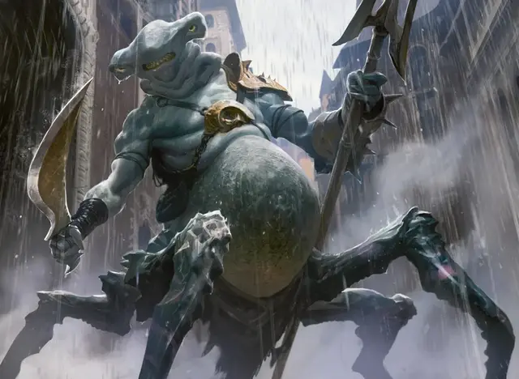

Красис 1-й категории
Category 1 Krasis
Средний Монстр, без мировоззрения

Класс Доспеха 15 (природный доспех)
Хиты 19 (3к8 + 6)
Скорость 30 футов
| мод | спас | ||
|---|---|---|---|
| СИЛ | 16 | +3 | +3 |
| ЛОВ | 15 | +2 | +2 |
| ТЕЛ | 14 | +2 | +2 |
| мод | спас | ||
|---|---|---|---|
| ИНТ | 2 | −4 | −4 |
| МДР | 13 | +1 | +1 |
| ХАР | 8 | −1 | −1 |
Чувства пассивное Восприятие 11
Опасность 1 (200 опыта)
Бонус мастерства +2
Особенности
Амфибия. Красис может дышать и воздухом и под водой.
Краболов. Когда красис попадает по существу своими Когтями, цель считается схваченной (Сл высбобождения 13) специализированным хватательным придатком на красисе. Он может одновременно схватить только одно существо.
Опорные ноги. У красиса несколько крабообразных ног. В результате чего, он получает преимущество на спасброски Силы и Ловкости, совершаемых против эффектов сбивания с ног.
Действия
Мультиатака. Красис совершает две атаки: одну Укусом и одну Когтями.
Укус. Рукопашная атака оружием: +5 к попаданию, досягаемость 5 футов, одна цель. Попадание: 8 (1к10 + 3) колющего урона.
Когти. Рукопашная атака оружием: +5 к попаданию, досягаемость 5 футов, одна цель. Попадание: 7 (1к8 + 3) рубящего урона.
Описание
В глубоких воронках, которые служат лабораториями и залами гильдий Синдиката Симиков, биоманты используют комбинацию магии и научных методов для создания новых форм жизни. Они уговаривают новые морфологии существующих существ или объединяют черты нескольких организмов в один, создавая существ, известных как красисы. Некоторые красисы — уникальные существа, которые не могут размножаться. Некоторые размножаются и становятся частью стандартного зверинца гильдии.
Создание Красиса
Чтобы создать красиса 1-й категории, выберите соответствующий блок характеристик, а затем бросьте один раз по таблице "Основные адаптации" и один раз по таблице "Второстепенные адаптации" (или выберите вариант из каждой таблицы), чтобы определить его дополнительные характеристики. Сила некоторых приспособлений зависит от категории красиса, как указано в описаниях этих приспособлений.
Вот лишь несколько примеров красисов: бьющий красис (слияние акулы-молота и мощного зверя), кроканура (крокодил-лягушка), драконокрылый красис (ящерица-селезень), тератозух (крокодил-краб) , акула-шарлотка (акула-краб) и акултокраб (улучшенная акула-шарлотка, которая также включает в себя элементы осьминога).
Основные адаптации
| к8 | Особенность |
| 1 | Кислотная кожа. Любое существо, которое касается красиса или попадает по нему рукопашной атакой, находясь в пределах 5 футов от него, получает 2 (1к4) урона кислотой. |
| 2 | Бронированная шкура. Красис имеет улучшенную естественную броню, обеспечиваемую панцирем или толстой чешуей, что повышает его КД на +4. |
| 3 | Биолюминесцентные метки. На коже красиса есть светящиеся узоры, которые принимают форму защитных рун, что дает ему преимущество в спасброски от заклинаний и других магических эффектов. |
| 4 | Полет. Красис имеет крылья и получает скорость полета, равную его скорости ходьбы. |
| 5 | Захваты. Когда красис попадает по существу своими Когтями, цель захватывается (Сл высвобождения 13) специальным хватательным придатком красиса. Одновременно таким способом может быть схвачено только одно существо. |
| 6 | Гипнотический узор (перезарядка 5–6). Действием красис создает вокруг себя завораживающие цвета и формы. Каждое существо в пределах 15 футов от него, которое может его видеть, должно преуспеть в спасброске Мудрости Сл 12, иначе станет ошеломленным на 1 минуту. Ошеломленное существо может повторять спасбросок в конце каждого своего хода, оканчивая эффект на себе в случае успеха. Существо, преуспевшее в спасброске от этого эффекта, становится невосприимчивым к гипнотическому узору всех красисов на 24 часа. |
| 7 | Ядовитое жало. Когда красис попадает по существу своими Когтями, существо должно преуспеть в спасброске Телосложения Сл 12, иначе станет отравленным на 1 минуту. Отравленное существо может повторять спасбросок в конце каждого своего хода, оканчивая эффект на себе в случае успеха. |
| 8 | Регенерация. Красис восстанавливает 2 хита в начале каждого своего хода, если у него есть хотя бы 1 хит. |
Второстепенные адаптации
| к4 | Особенность |
| 1 | Аморфная структура. Красис может пройти через пространство шириной всего 1 дюйм, не протискиваясь. |
| 2 | Водоплавающий. Красис получает скорость плавания, равную его скорости ходьбы. |
| 3 | Скорость подъема. Красис получает скорость подъема, равную его скорости ходьбы. |
| 4 | Загадочная кожа. Красис может менять цвет, чтобы соответствовать своему окружению. Он совершает с преимуществом проверки Ловкости (Скрытность), совершаемые для того, чтобы спрятаться. |
| 5 | Повышенное осознание. Красиса нельзя застать врасплох, потому что у него чувствительные усики, как у сома, стереоскопическое зрение, как у хамелеона, язык, как у змеи, стебли глаз, как у омара, или набор из нескольких глаз. |
| 6 | Чернильное облако (перезаряжается после короткого или продолжительного отдыха). Находясь под водой, красис может использовать бонусное действие, чтобы выпустить облако чернил, а затем переместиться на свою скоростью. Чернильное облако неподвижно и заполняет сферу радиусом 20 футов с центром в точке в пространстве красиса, прежде чем сдвинуться с места. Сфера является сильно заслонённой до тех пор, пока чернила не исчезнут через 1 минуту. Сильное течение также рассеивает чернильное облако. |
| 7 | Прыгающие ноги. С разбегом или без него прыжок красиса в длину составляет 20 футов. Его прыжок в высоту составляет 10 футов. |
| 8 | Стабилизирующие ноги. Красис имеет несколько крабовидных ног. В результате он совершает с преимуществом спасброски Силы и Ловкости против эффектов, сбивающих его с ног. |